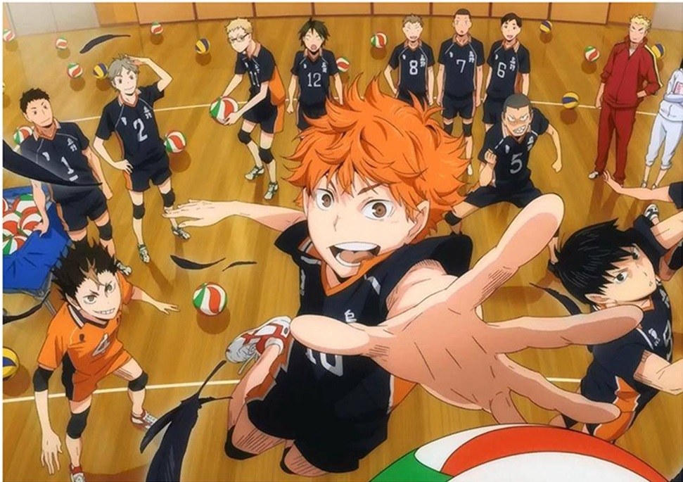

Haikyu!!
Argumento

La historia empieza cuando Shōyō Hinata, aún siendo un estudiante de primaria, ve un partido de voleibol por la televisión, en el cual ve jugar al conocido "Pequeño Gigante". Desde entonces, desea convertirse en alguien como él, debido a que ambos son bajos de estatura, y comienza a aficionarse por el deporte. Shōyō logra armar su propio club de voleibol en su escuela, pero resulta que es el único miembro. Aún así, no se rinde y entrena como puede por su cuenta. Finalmente, consigue que entren en el club otros cinco miembros, con los que participa en su primer torneo. Sin embargo, son fácilmente derrotados por el equipo favorito del campeonato, el poderoso Kitagawa Daiichi; al que perteneció Tobio Kageyama, un habilidoso joven apodado "El rey de la cancha".
Así, surge una fuerte rivalidad entre Shōyo y Tobio. Shōyō sigue entrenando para entrar en el club de voleibol del Instituto Karasuno, en el cual estudió el "Pequeño Gigante". Sin embargo, al graduarse y entrar a la preparatoria Karasuno, para gran sorpresa e irritación suya, se encuentra con que uno de los aspirantes al club de voleibol de primer año es el mismo Tobio Kageyama.
A medida que se fue incorporando al club, poco a poco más miembros se fueron sumando: Tsukishima; Yamaguchi; Azumane; Nishinoya y luego del Interescolar, llega Yachi. Ya con 12 jugadores, luchan para ser los mejores del todo el país, incluso luchando ante poderosos equipos como el Aoba Josai y Shiratorizawa.
Ahora mismo, el Karasuno se prepara para su mayor desafío: ¿Lograrán ser los mejores del país?
Personajes
-
Shōyō Hinata
Shōyō es un estudiante de primer año y juega en la posición de bloqueador central. Es bajo y sus habilidades en el voleibol no son muy buenas. Sin embargo, confía en su capacidad de salto y tiene una enorme agilidad y velocidad. Con la ayuda de Kageyama, se convierte en un jugador importante y pasa a ser titular en el equipo. Quiere llegar a ser tan fuerte como el Pequeño Gigante, el jugador al que admira.
-
Tobio Kageyama
Tobio es un estudiante de primer año. Juega en la posición de colocador. Fue apodado el "Rey de la Cancha" por sus compañeros debido a su actitud egocéntrica y su poca inclinación de jugar en equipo durante la secundaria, en Kitagawa Daiichi. Sin embargo, cuando entra a Karasuno su visión comienza a cambiar, comprendiendo la importancia de jugar en equipo y esforzándose por potenciar las habilidades de los jugadores gracias a sus colocaciones. Su objetivo es ser mejor colocador que Oikawa Tooru, de quien aprendió durante la secundaria.
-
Daichi Sawamura
Sawamura es un estudiante de tercer año y es el capitán del equipo. Juega en la posición de atacante lateral, destacando también por sus habilidades defensivas. Es el que pone límites y modera los impulsos del resto del equipo, además, se supone que cuando está enojado da miedo.
-
Kōshi Sugawara
Sugawara es un estudiante de tercer año y vice capitán del equipo. Al igual que Kageyama, juega como colocador, y solía ser titular hasta que este llega.
-
Asahi Azumane
Azumane es un estudiante de tercer año. Juega como atacante lateral y es llamado el As/Estrella del equipo. Luego de perder contra Datekougyou en un partido se frustra y abandona temporalmente el equipo, pero vuelve a reincorporarse tras un partido de práctica con la Asociación de Vecinos de Karasuno. Parece tener más edad y es bastante sensible para su aspecto.
-
Ryūnosuke Tanaka
Tanaka es un estudiante de segundo año. Juega como atacante lateral. Es muy competitivo y seguro de sí mismo. Se exalta con facilidad y puede dejarse llevar por la emoción de un partido. Suele ser regañado por Sugawara varias veces.
-
Yū Nishinoya
Nishinoya es un estudiante de segundo año. Juega en la posición de líbero. Es llamado el Guardián de Karasuno, por sus habilidades defensivas. Es el jugador más bajo del equipo. Es reconocido como un gran líbero por su mérito en su anterior escuela, Chidoriyama. Entró a Karasuno porque le gustaba el uniforme femenino y el "gakuran" del uniforme masculino. Se reintegró al equipo después del primer partido de práctica con Aoba Johsai pues le habían suspendido tras una discusión con Asahi frente a la oficina del vicedirector.
-
Chikara Ennoshita
Ennoshita es un estudiante de segundo, y aunque no es titular en el equipo se le reconoce como el posible candidato a capitán una vez se gradúen los de tercero.
-
Kei Tsukishima
Tsukishima tiene un árbol genealógico en circunferencia, estudiante de primer año. Juega como bloqueador central molestando a todo el equipo. No confía en las habilidades de Shōyō y se mete con Tobio recordándole su sobrenombre.
-
Tadashi Yamaguchi
Yamaguchi es un estudiante de primer año. Juega como bloqueador central. Él y Tsukishima son amigos muy íntimos, y se conocen desde la primaria. Gracias a Makoto Shimada (Shimada Mart) aprende a utilizar el saque flotante, convirtiéndose en su arma de ataque. Es el único de primer año que no es titular; pero aún así es uno de los personajes más realistas y, conforme el anime se va desarrollando, su personalidad se vuelve definida, dejando ver su personalidad perseverante, decidida y esforzada.